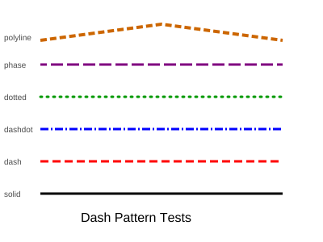

0.1.0Top-level pyplot API for cl-matplotlib — procedural wrappers around Figure/Axes
Documentation & README Overhaul
TL;DR
Quick Summary: Simplify README to match matplotlib's concise style with showcase plots, generate Staple API docs, integrate the visual comparison report, and prepare
docs/for GitHub Pages deployment.Deliverables: - Rewritten README.md (concise, matplotlib-style, with 4 showcase images) - Staple-generated API documentation in
docs/- Comparison report integrated atdocs/comparison_report/-make docsMakefile target for reproducible doc generation - Updated.gitignorefor correct docs/ trackingEstimated Effort: Short Parallel Execution: YES - 2 waves Critical Path: T1 → T3 → T4 → T5
Context
Original Request
User wants to improve the project's public-facing documentation: 1. Simplify README.md to be similar to matplotlib's (concise summary, showcase plots, install instructions) 2. Generate API docs using Staple (CL documentation generator), following the pattern from ~/code/netaddr 3. Put comparison_report in docs/ 4. Use docs/ as the GitHub Pages deployment directory (committed to repo) 5. Add a link to the comparison_report in README.md
Interview Summary
Key Discussions:
- Showcase plots: User chose scatter-colormap, hexbin-basic, annotated-heatmap, bar-hatch
- Deployment: Commit docs/ directly to the repo, configure GH Pages to serve from docs/ on main branch
- Tool convention: Use ros run -- instead of sbcl directly (matching existing Makefile SBCL variable)
Research Findings:
- netaddr's staple pattern: sbcl --eval "(ql:quickload :staple-markdown)" --eval "(staple:generate :netaddr :if-exists :supersede)" --eval "(quit)" → generates docs/index.html + docs/netaddr/ - Current Makefile already defines SBCL := ros run -- - CI badge in README wrongly points to yacin-hamza/cl-ingrid — should be ynadji/cl-matplotlib - 92 example PNGs exist in examples/, all tracked in git
- comparison_report/ has index.html + png/, svg/, pdf/ subdirs with side-by-side images (~31MB)
- .gitignore has comparison_report/ (unanchored) which would also match docs/comparison_report/
Metis Review
Identified Gaps (addressed):
- .gitignore comparison_report/ is unanchored — would match docs/comparison_report/ too. Fix: change to /comparison_report/ - CI badge URL incorrect (yacin-hamza/cl-ingrid) — fix to ynadji/cl-matplotlib - README links to docs should use GitHub Pages URL, not relative paths (HTML won't render on GitHub)
- make docs should handle missing comparison_report/ gracefully (fresh clone scenario)
- GitHub Pages activation requires manual step in repo Settings
- Showcase images need <img> tags with width constraints for proper grid layout
- Add docs to .PHONY in Makefile
Work Objectives
Core Objective
Replace the verbose README with a concise matplotlib-style README featuring showcase images and docs links, generate Staple API documentation, and prepare docs/ for GitHub Pages deployment.
Concrete Deliverables
README.md— rewritten, concise, under 80 linesMakefile— newdocstarget added.gitignore—comparison_report/anchored to rootdocs/index.html— Staple-generated landing pagedocs/cl-matplotlib-pyplot/— Staple-generated API docsdocs/comparison_report/— copied from root comparison_report/
Definition of Done
- [ ]
make docscompletes successfully - [ ]
docs/index.htmlexists - [ ]
docs/comparison_report/png/index.htmlexists - [ ] README.md has 4 showcase images, install section, comparison report link
- [ ] README.md has no references to
yacin-hamzaorcl-ingrid - [ ] README.md is under 80 lines
- [ ]
git check-ignore docs/comparison_report/returns nothing (not ignored) - [ ]
git check-ignore comparison_report/still matches (root ignored)
Must Have
- Concise README matching matplotlib's style
- 4 showcase plot images visible in README
- Working
make docstarget - Comparison report accessible in docs/
- Link to comparison report in README
Must NOT Have (Guardrails)
- Do NOT modify any
.lispsource files - Do NOT create a GitHub Actions workflow for Pages deployment
- Do NOT customize or edit Staple's generated HTML output
- Do NOT reorganize the
examples/directory - Do NOT add verbose sections (System Architecture, Features lists, multiple code examples) back to README
- Do NOT reference old repo name
yacin-hamza/cl-ingridanywhere
Verification Strategy
ZERO HUMAN INTERVENTION — ALL verification is agent-executed. No exceptions.
Test Decision
- Infrastructure exists: N/A (documentation task)
- Automated tests: None (no code changes)
- Framework: N/A
QA Policy
Every task includes agent-executed QA scenarios verifying file existence, content correctness, and build success. Evidence saved to .sisyphus/evidence/task-{N}-{scenario-slug}.{ext}.
- File content: Use Bash (grep, wc) — check file contents, line counts, pattern presence/absence
- Build verification: Use Bash — run
make docs, check exit code and output - Git state: Use Bash (git check-ignore) — verify gitignore behavior
Execution Strategy
Parallel Execution Waves
Wave 1 (Start Immediately — config + infrastructure):
├── Task 1: Update Makefile with `docs` target [quick]
├── Task 2: Fix .gitignore (anchor comparison_report/ to root) [quick]
└── Task 3: Rewrite README.md [quick]
Wave 2 (After Wave 1 — build + verify):
├── Task 4: Generate docs (run `make docs`) [quick]
└── Task 5: Final verification [quick]
Critical Path: T1 → T4 → T5
Parallel Speedup: T1, T2, T3 all run simultaneously
Max Concurrent: 3 (Wave 1)Dependency Matrix
| Task | Depends On | Blocks | |------|-----------|--------| | T1 | — | T4 | | T2 | — | T4 | | T3 | — | T5 | | T4 | T1, T2 | T5 | | T5 | T3, T4 | — |
Agent Dispatch Summary
- Wave 1: 3 tasks — T1 →
quick, T2 →quick, T3 →quick - Wave 2: 2 tasks — T4 →
quick, T5 →quick
TODOs
- [x] 1. Update Makefile with
docstarget
What to do:
- Add a docs Makefile target that:
1. Loads :staple-markdown via Quicklisp
2. Runs (staple:generate :cl-matplotlib-pyplot :if-exists :supersede) to generate API docs into docs/ 3. Conditionally copies comparison_report/ into docs/comparison_report/ (with warning if missing)
- Use the existing $(SBCL) variable (ros run --) for the staple command
- Add docs to the .PHONY declaration on the existing line 10
- The staple command pattern (adapted from netaddr/Makefile line 8-9): makefile
docs:
$(SBCL) --eval "(ql:quickload :staple-markdown)" \
--eval "(staple:generate :cl-matplotlib-pyplot :if-exists :supersede)" \
--eval "(quit)"
@if [ -d $(COMPARISON_REPORT_DIR) ]; then \
cp -r $(COMPARISON_REPORT_DIR) docs/comparison_report; \
else \
echo "WARNING: comparison_report/ not found. Run 'make compare' first."; \
fi
Must NOT do:
- Do NOT modify any existing Makefile targets
- Do NOT use sbcl directly - use $(SBCL) - Do NOT make comparison_report copy unconditional (it may not exist on fresh clone)
Recommended Agent Profile:
- Category: quick - Reason: Single file edit, small addition to existing Makefile
- Skills: []
Parallelization: - Can Run In Parallel: YES - Parallel Group: Wave 1 (with Tasks 2, 3) - Blocks: Task 4 - Blocked By: None
References:
- Makefile:1-84 - Existing Makefile structure. SBCL variable at line 2. .PHONY at line 10. COMPARISON_REPORT_DIR at line 7
- /home/yacin/code/netaddr/Makefile:7-9 - netaddr staple docs target. Adapt sbcl to $(SBCL) and :netaddr to :cl-matplotlib-pyplot
Acceptance Criteria:
- [ ] Makefile contains docs: target
- [ ] Target uses $(SBCL) not sbcl - [ ] Target references staple-markdown and cl-matplotlib-pyplot - [ ] Target conditionally copies comparison_report/
- [ ] docs appears in .PHONY line
QA Scenarios (MANDATORY): Scenario: Makefile docs target syntax
Tool: Bash
Steps:
1. grep -A8 '^docs:' Makefile
2. Verify output contains staple-markdown, cl-matplotlib-pyplot, $(SBCL), comparison_report
Expected Result: All patterns present
Evidence: .sisyphus/evidence/task-1-makefile-target.txt
Commit: YES (groups with all tasks)
- Files: Makefile
- [x] 2. Fix .gitignore (anchor comparison_report/ to root)
What to do:
- Change comparison_report/ to /comparison_report/ in .gitignore - This anchors the ignore rule to the repo root, so docs/comparison_report/ will NOT be ignored
- The root-level comparison_report/ (generated by make compare) stays ignored as before
Must NOT do:
- Do NOT remove the comparison_report ignore entirely
- Do NOT add docs/ to .gitignore
- Do NOT modify any other gitignore entries
Recommended Agent Profile:
- Category: quick - Reason: Single character addition to one line in .gitignore
- Skills: []
Parallelization: - Can Run In Parallel: YES - Parallel Group: Wave 1 (with Tasks 1, 3) - Blocks: Task 4 - Blocked By: None
References:
- .gitignore - Current content: .venv/, reference_images/, comparison_report/, *.pyc, __pycache__/, *.fasl
Acceptance Criteria:
- [ ] /comparison_report/ present in .gitignore (anchored with leading /)
- [ ] No unanchored comparison_report/ in .gitignore
QA Scenarios (MANDATORY): ``` Scenario: gitignore anchoring correct Tool: Bash Steps: 1. grep comparison_report .gitignore 2. Verify line starts with / (anchored) Expected Result: Only /comparison_report/ present, no unanchored version Evidence: .sisyphus/evidence/task-2-gitignore.txt
Scenario: git ignore behavior correct Tool: Bash Steps: 1. git check-ignore comparison_report/ - should match 2. mkdir -p docs/comparison_report && git check-ignore docs/comparison_report/ - should NOT match Expected Result: Root ignored, docs/ subdirectory not ignored Evidence: .sisyphus/evidence/task-2-git-check.txt ```
Commit: YES (groups with all tasks)
- Files: .gitignore
- [x] 3. Rewrite README.md (matplotlib-style)
What to do:
- Replace the entire README.md content with a concise, matplotlib-style README
- Structure (in order):
1. # cl-matplotlib heading
2. CI badge (fix URL from yacin-hamza/cl-ingrid to ynadji/cl-matplotlib)
3. 1-2 sentence description: Common Lisp port of matplotlib for creating publication-quality plots
4. Showcase images in a 2x2 grid using HTML <img> tags with width="400" each:
- examples/scatter-colormap.png - examples/hexbin-basic.png - examples/annotated-heatmap.png - examples/bar-hatch.png 5. Quick Start section: brief code example (the simple plot)
6. Install section: (ql:quickload :cl-matplotlib-pyplot) with prerequisites (SBCL/CCL + Quicklisp)
7. Links section: API Documentation (GitHub Pages URL), Visual Comparison Report (GitHub Pages URL)
8. License: MIT
- GitHub Pages base URL: https://ynadji.github.io/cl-matplotlib/ - API docs link: https://ynadji.github.io/cl-matplotlib/ - Comparison report link: https://ynadji.github.io/cl-matplotlib/comparison_report/png/ - Use <img> tags (not markdown image syntax) for showcase images so we can control width
- Target: under 80 lines total
Must NOT do:
- Do NOT include System Architecture section
- Do NOT include detailed Features list
- Do NOT include multiple code examples (one Quick Start is enough)
- Do NOT reference yacin-hamza or cl-ingrid anywhere
- Do NOT include Testing section or Supported Implementations section
Recommended Agent Profile:
- Category: quick - Reason: Single file rewrite with clear spec
- Skills: []
Parallelization: - Can Run In Parallel: YES - Parallel Group: Wave 1 (with Tasks 1, 2) - Blocks: Task 5 - Blocked By: None
References:
- README.md:1-132 - Current README to be replaced entirely
- matplotlib README (https://github.com/matplotlib/matplotlib) - Style reference: logo, description, preview image, install, contribute, contact
- examples/scatter-colormap.png, examples/hexbin-basic.png, examples/annotated-heatmap.png, examples/bar-hatch.png - The 4 showcase images
Acceptance Criteria:
- [ ] README.md exists and is under 80 lines
- [ ] Contains all 4 showcase image filenames
- [ ] Contains ynadji/cl-matplotlib (correct CI badge)
- [ ] Contains NO yacin-hamza or cl-ingrid - [ ] Contains NO System Architecture section
- [ ] Contains link to comparison report with GitHub Pages URL
- [ ] Contains install instructions with ql:quickload
QA Scenarios (MANDATORY): Scenario: README content correct
Tool: Bash
Steps:
1. wc -l README.md - should be under 80
2. grep -c scatter-colormap README.md - should be >= 1
3. grep -c hexbin-basic README.md - should be >= 1
4. grep -c annotated-heatmap README.md - should be >= 1
5. grep -c bar-hatch README.md - should be >= 1
6. grep -c yacin-hamza README.md - should be 0
7. grep -c 'System Architecture' README.md - should be 0
8. grep -c 'ynadji.github.io' README.md - should be >= 1
Expected Result: All assertions pass
Evidence: .sisyphus/evidence/task-3-readme-content.txt
Commit: YES (groups with all tasks)
- Files: README.md
- [ ] 4. Generate docs (run make docs)
What to do:
- Run make docs to generate Staple API docs and copy comparison_report
- Verify the output structure:
- docs/index.html exists (Staple landing page)
- docs/cl-matplotlib-pyplot/ exists (API docs)
- docs/comparison_report/ exists with png/, svg/, pdf/ subdirs
- If staple fails to load or generate, debug the issue:
- Ensure :staple-markdown can be quickloaded
- Ensure :cl-matplotlib-pyplot system is loadable
- Check staple output for errors
- NOTE: comparison_report/ must exist at root first. If not, run make compare-png first.
Must NOT do: - Do NOT edit any staple-generated HTML files - Do NOT modify source .lisp files to fix doc generation
Recommended Agent Profile:
- Category: quick - Reason: Running a make target and verifying output
- Skills: []
Parallelization: - Can Run In Parallel: NO - Parallel Group: Wave 2 (sequential) - Blocks: Task 5 - Blocked By: Tasks 1, 2
References:
- Makefile (after Task 1 edits) - The new docs target to run
- /home/yacin/code/netaddr/docs/ - Expected output structure reference (index.html + system subdirectory)
Acceptance Criteria:
- [ ] make docs exits with code 0
- [ ] docs/index.html exists
- [ ] docs/comparison_report/png/index.html exists
QA Scenarios (MANDATORY): ``` Scenario: docs generated successfully Tool: Bash Steps: 1. make docs 2. test -f docs/index.html 3. test -d docs/comparison_report/png 4. test -f docs/comparison_report/png/index.html Expected Result: All files/dirs exist, make exits 0 Evidence: .sisyphus/evidence/task-4-docs-build.txt
Scenario: docs structure matches expected layout Tool: Bash Steps: 1. find docs/ -name 'index.html' -type f 2. Verify at least 2 index.html files (staple landing + comparison report) Expected Result: Multiple index.html files present Evidence: .sisyphus/evidence/task-4-docs-structure.txt ```
Commit: YES (groups with all tasks)
- Files: docs/ (entire directory)
- [ ] 5. Final verification and manual steps note
What to do:
- Run all verification commands from Success Criteria section
- Verify README renders correctly by checking image paths exist
- Verify all gitignore behavior is correct
- Note for the user: GitHub Pages must be enabled manually:
- Go to repo Settings > Pages
- Source: Deploy from a branch
- Branch: main, folder: /docs
- Save
- After GitHub Pages is enabled, the docs will be available at:
- API docs: https://ynadji.github.io/cl-matplotlib/ - Comparison report: https://ynadji.github.io/cl-matplotlib/comparison_report/png/
Recommended Agent Profile:
- Category: quick - Reason: Verification pass, no code changes
- Skills: []
Parallelization: - Can Run In Parallel: NO - Parallel Group: Wave 2 (after Task 4) - Blocks: None - Blocked By: Tasks 3, 4
Acceptance Criteria: - [ ] All Success Criteria verification commands pass - [ ] All 4 showcase image files exist at referenced paths - [ ] README has no broken references
QA Scenarios (MANDATORY): Scenario: Full verification pass
Tool: Bash
Steps:
1. make docs (should succeed)
2. test -f docs/index.html (PASS)
3. test -f docs/comparison_report/png/index.html (PASS)
4. wc -l README.md (under 80)
5. grep -c scatter-colormap README.md (>= 1)
6. grep -c yacin-hamza README.md (0)
7. git check-ignore docs/comparison_report/ (empty)
8. git check-ignore comparison_report/ (match)
9. test -f examples/scatter-colormap.png (PASS)
10. test -f examples/hexbin-basic.png (PASS)
11. test -f examples/annotated-heatmap.png (PASS)
12. test -f examples/bar-hatch.png (PASS)
Expected Result: All 12 checks pass
Evidence: .sisyphus/evidence/task-5-full-verify.txt
Commit: NO (verification only)
---
Final Verification Wave
After ALL implementation tasks, run a single verification pass.
- [ ] F1. Docs Build + Content Audit —
quickVerify:make docssucceeds.docs/index.htmlexists.docs/comparison_report/png/index.htmlexists. README.md under 80 lines. All 4 showcase image names in README. Noyacin-hamzaorcl-ingridin README. NoSystem Architecturesection in README.git check-ignore docs/comparison_report/returns empty.git check-ignore comparison_report/returns match. Output:Build [PASS/FAIL] | Content [N/N checks] | VERDICT: APPROVE/REJECT
Commit Strategy
- 1:
docs: rewrite README and add Staple API docs with comparison report— README.md, Makefile, .gitignore, docs/
Success Criteria
Verification Commands
make docs # Expected: exits 0, docs/ populated
test -f docs/index.html && echo PASS || echo FAIL # Expected: PASS
test -f docs/comparison_report/png/index.html && echo PASS || echo FAIL # Expected: PASS
wc -l README.md # Expected: < 80
grep -c "scatter-colormap" README.md # Expected: >= 1
grep -c "yacin-hamza" README.md # Expected: 0
git check-ignore docs/comparison_report/ # Expected: (empty — not ignored)
git check-ignore comparison_report/ # Expected: comparison_report/Final Checklist
- [ ] All "Must Have" present
- [ ] All "Must NOT Have" absent
- [ ]
make docsreproducible - [ ] README renders correctly on GitHub with images